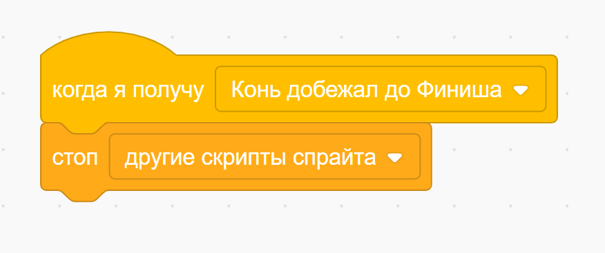
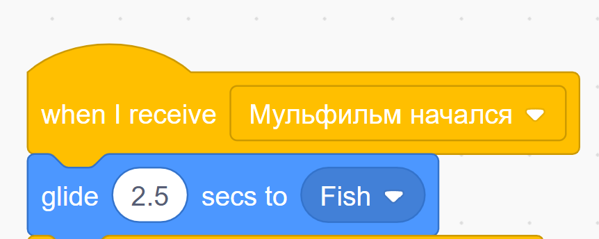
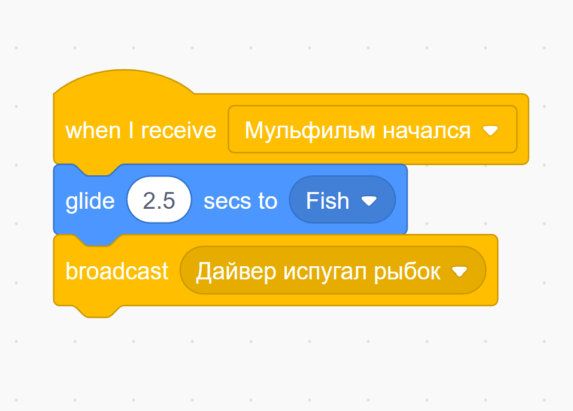
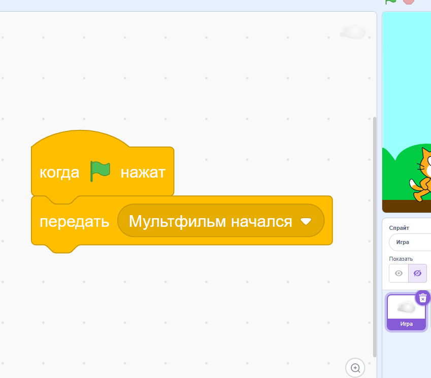
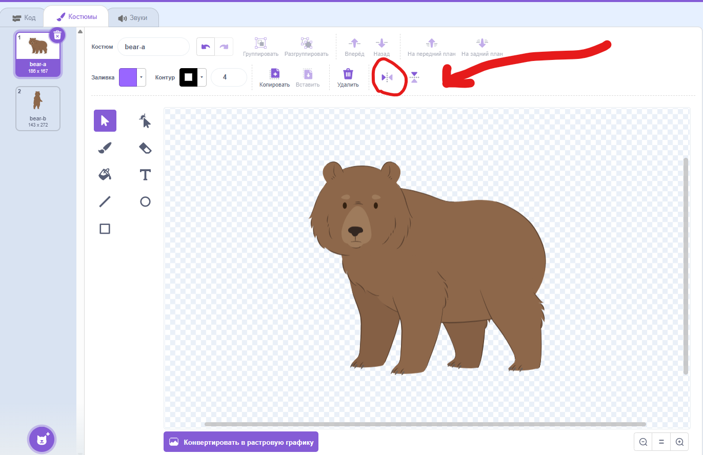
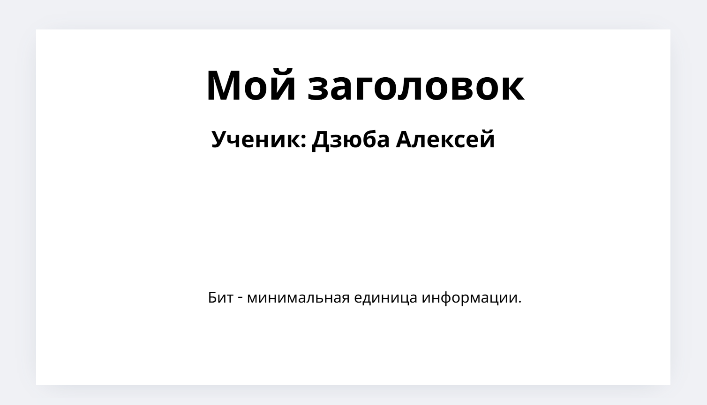
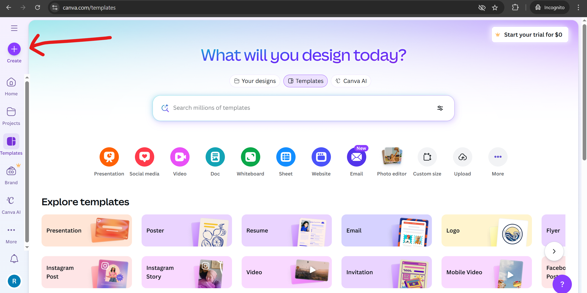
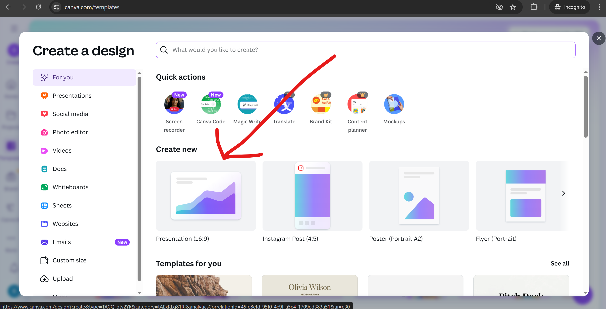

Средняя группа (код: ИФ-8)
Программное обеспечение: Scratch
Цель: сделать игру с элементом случайности – два коня наперегонки добираются до финиша.
Учебная цель: вспомнить, как работать с Игрой и событиями (сигналами).
Запрограммируй игру согласно видео. Подсказки:
- Чтобы найти картинку для Коня, начни вводить на английском слово "Horse".
- Финиш можешь нарисовать сам либо скачать, нажав сюда. Также для красоты рекомендую в объекте Финиш единожды достать и нажать блок из секции "Внешний вид" – "перейти на [задний] слой".
-
Тебе понадобится понятие скорости для каждого коня. Это можно сделать с помощью создания переменной в секции "Переменные".
Также при создании нужно выбрать "Только для этого спрайта".
Если возникают проблемы с переменной "скорость" у другого коня, попробуй у проблемного коня удалить эту переменную и создать заново.
Также обращай внимание, чтобы у каждого коня была своя отдельная скорость, а не общая – нам нужен элемент случайности в игре. - Чтобы сделать скорость случайной, используй блок из секции "Операторы" – "выдать случайное от [] до []".
-
Чтобы проигравший конь останавливался, можно использовать вот такой скрипт:

{kind=link}
{kind=link}
Доказательство выполненного д/з: скриншот программы (скрипта) Коня.
Прошлое д/з (код: ИФ-7)
Программное обеспечение: Scratch
Цель: сделать мульфильм – дайвер подплывает к рыбкам, они пугаются и начинают двигаться.
Учебная цель: вспомнить, как работать с Игрой (Мульфильмом) и событиями (сигналами).
Запрограммируй мульфильм согласно видео. Подсказки:
-
Фон можно выбрать справа снизу в панели "Сцена" - нажимаем на панель, потом иконку снизу, потом на увеличительное стекло, и можно выбрать фон "Underwater";
Спрайты (костюмы) объектов ищутся в поиске по словам: Дайвер – "Diver", Рыбка – "Fish". -
Код (блоки) Мульфильма:

-
Вместо блоков цикла и движения шагами можно использовать блок "Плыть", например, так:

Обрати внимание, что в этом блоке можно указывать, к какому объекту плыть, а также плыть в случайном направлении - Если Рыбки возвращаются к Дайверу – ничего страшного – это нормальное поведение программы.
{kind=link}
Нажми сюда, чтобы увидеть подсказку-спойлер с полным скриптом Дайвера (жми сюда только если прям совсем не получается):
{kind=link}
Доказательство выполненного д/з: скриншот программы (скрипта) Дайвера и какой-нибудь Рыбки
Прошлое д/з (код: ИФ-6)
Программное обеспечение: Scratch
Цель: сделать мульфильм.
Учебная цель: вспомнить, как работать с Игрой и событиями (сигналами).
Запрограммируй мульфильм согласно видео. Подсказки:
- Фон можно выбрать справа снизу в панели "Сцена" - нажимаем на панель, потом иконку снизу, потом на увеличительное стекло, и можно выбрать фон "Blue Sky"
-
Код (блоки) Игры:
 - Вместо блока "Говорить" используем блок "Говорить 2 секунды"
-
Медведь:
- вместо блока "идти 10 шагов" используем блок "изменить х на (какое-то число)"
- чтобы отзеркалить спрайт Медведя, используем вот эту кнопку в интерфейсе "Костюмы": 
{kind=link}
{kind=link}
Доказательство выполненного д/з: скриншот программы (скрипта) Кота и Медведя
Прошлое д/з (код: ИФ-5)
Программное обеспечение: Scratch
Цель: сделать кота, который бегает за указателем мыши.
Учебная цель: вспомнить, как работать с движением.
Запрограммируй:
- ожидание перед запуском программы в 3 секунды
- движение кота за указателем мыши
- чтобы кот говорил "Догнал!", когда дотрагивается до указателя мыши
Доказательство выполненного д/з: скриншот программы (скрипта) кота
Прошлое д/з (код: КА-1)
Программное обеспечение: сайт pravo.by
Задача: прочитать статью о кибербезопасности.
Учебная цель: вспомнить и узнать новые понятия в кибербезопасности.
Задачи:
- Перейди по ссылке на статью сайта pravo.by
- Прочитай, изучи новые понятия в кибербезопасности
- Доказательство выполненного д/з: будь готов кратко пересказать, что нового ты изучил после прочтения статьи
Прошлое д/з (№ -1)
Программное обеспечение: Canva
Задача: сделать оглавляющий слайд.
Цель: повторить работу с текстовыми элементами.
Задачи:
- Зайди на сайт онлайн-конструктора презентаций и дизайнов – Canva
- Нажми на кнопку вначале "Start designing for free" ("Начни создавать бесплатно")
- Зарегистрируйся: с помощью имейла (на имейл придёт код, который надо будет ввести в Canva), или своего аккаунта в Google, или каким-то другим способом
- Далее нажми на кнопку Create: 
- Выбери Presentation 
- Слева выбери секцию "Text", выбирай нужные текстовые элементы и составь слайд
- Доказательство выполненного д/з: просто скриншот этого слайда
Прошлое д/з (№ -2)
Программное обеспечение: Kodu Game Lab (нужно установить)
Задача: сделать игру.
Цель игры: отстреливаться от противников, которые идут на нас. Камера - от первого лица. Противники появляются в случайное время между 3-мя и 10-ью секундами.
Подсказки:
- В качестве игрока можно использовать объект "Задвижка"
- Для камеры от 1-го лица надо использовать в меню "Видеть" — "1 игрок"